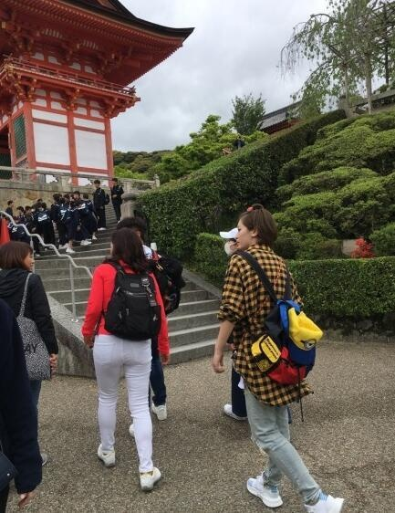

4月22日，有网友分享了和吴奇隆刘诗诗夫妇的自拍合影。照片中，刘诗诗倚靠老公肩头超甜蜜，吴奇隆则口罩遮面，十分低调，有粉丝猜测两人是在日本的地铁上。

4月25日，有网友在日本京都的清水寺偶遇吴奇隆和刘诗诗，夫妇二人看似玩得非常开心，吴奇隆的手里还拿着一自拍杆，看样子也没少自拍吧！
长春国贸查阅了一下，清水寺是位于京都东部音羽山的山腰，始建于778年，曾数次被烧毁并重建，因寺中清水而得名，是京都最古老的寺院。现存的大部分建筑始建于公元1633年，被定为国宝的主堂是由139根立柱支撑的。本堂的下方有著名的“音羽瀑布”，与祈求分娩顺利的“子安塔”，后者被列为世界文化遗产，清水寺建于音羽山上，为日本佛教北法相宗的总院。清水寺是京都的名胜古迹，据说也是求子安产的圣地。
Hello laoxie, where are you from?